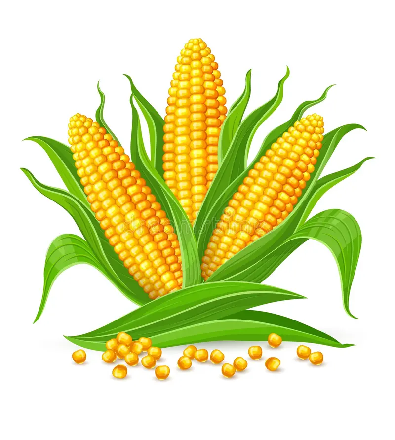

Milho
Origem do milho
O milho, atualmente, é um dos grãos mais produzidos no mundo! No Brasil, ele atingiu o marco histórico de preço, o que alegrou muitos produtores com a valorização e lucratividade alta. Apesar de sabermos o quanto o milho foi melhorado ao longo do tempo, muitos se perguntam: qual a sua origem e quando ele começou a ser cultivado? O milho é a planta comercial originária das Américas mais importante no cenário agrícola. A origem do milho ainda é muito discutida, já que a gramínea pode ter surgido tanto do Paraguai até a Colômbia, quanto da Guatemala até o México. De acordo com as evidências, é possível que seja originária do México. Isso porque é uma espécie pertencente à família Gramineae/Poaceae, cujo parente mais próximo, acredita-se ser o Teosinto (Zea mays spp. parviglumis), e seu registro restringe-se ao Vale Central de Balsas, no México.
Preço: R$ 50,00/saca
Do Campo à Cidade
O milho é cultivado nas fazendas, colhido e processado em silos e moinhos. Em seguida, é transportado para centros de distribuição nas cidades e, finalmente, chega aos supermercados e mercados locais, onde pode ser comprado por consumidores.
Soja

Origem da soja
primeira referência à soja como alimento data de mais de 5.000 anos. O grão foi citado e descrito pelo imperador chinês Shen-nung, considerado o “pai” da agricultura chinesa, que deu início ao cultivo de grãos como alternativa ao abate de animais. Um dos principais indicativos que atestam a importância cultural e nutricional da soja para os chineses é o fato de que já nos anos 200 antes de Cristo (a.C.) o grão era a matéria-prima essencial para a produção do tofu (leite de soja coalhado), tendo representado por milhares de anos a proteína vegetal, o leite, o queijo, o pão e o óleo para os chineses. Além disso, a soja era uma espécie de moeda, porque era vendida à vista ou trocada por outras mercadorias. A soja de cinco milênios atrás difere muito da soja que conhecemos hoje: eram plantas rasteiras que se desenvolviam ao longo de rios e lagos – uma espécie de soja selvagem. O processo de “domesticação” da soja ocorreu no século XI a.C., a partir de cruzamentos naturais feitos por cientistas chineses. Neste momento, a soja era encontrada principalmente na região oriental do Norte da China, onde se cultivava trigo de inverno. A partir daí, a soja começa a ser introduzida no Sul da China, indo para a Coréia, o Japão e outros países do atual Sudeste da Ásia. Registros históricos indicam que a expansão da cultura da soja foi lenta: teria chegado à Coréia e desta ao Japão no século III depois de Cristo (d.C.) – ficando até então restrita à China. No Ocidente, o grão surge no final do século XV e início do século XVI, época das chamadas grandes navegações europeias. A adoção da soja como alimento é lenta no Ocidente. No século XVIII, pesquisadores europeus começam os estudos com brotos de soja como matéria-prima para a produção de óleo e nutriente animal. O cultivo comercial se inicia nos primeiros anos do século XX nos Estados Unidos, e na segunda década do século XX o teor de óleo e proteína do grão passam a chamar a atenção das indústrias mundiais. Foi após o final da Primeira Guerra Mundial, em 1919, que o grão de soja se torna um item de comércio exterior importante. Pode-se considerar o ano de 1921, quando é fundada a American Soybean Association (ASA), como o marco da consolidação da cadeia produtiva da soja em esfera mundial.
Preço: R$ 70,00/saca
Do Campo à Cidade
A soja é plantada e colhida em grandes fazendas. Após a colheita, os grãos de soja são processados e transformados em diversos produtos, como óleo e farelo. Esses produtos são então transportados para fábricas e supermercados, onde podem ser adquiridos por consumidores.
Trigo

Origem do trigo
O trigo é uma cultura de grande importância econômica e alimentícia, fazendo parte da dieta de grande parte da população mundial. Além de ser uma fonte de energia (carboidrato), é rica em vitaminas e minerais essenciais como do complexo B, potássio, magnésio e fósforo. É uma gramínea originada e domesticada no Médio Oriente, mais especificamente no “Crescente Fértil”, zona geográfica que abarca o trecho africano e asiático do local (antiga Mesopotâmia). Inicialmente, era consumido em grãos, em uma espécie de papa, junto a peixe e frutas. Por volta de 4.000 a.C., o processo de fermentação do trigo foi descoberto, dando origem aos primeiros pães. Da Mesopotâmia, espalhou-se pelo mundo, com relatos de que, por volta de 2.000 a.C, os chineses já utilizam o trigo para produção de farinha, pães, macarrão. De lá chegou à Europa e depois à América. O trigo no Brasil chegou provavelmente em 1534, com Martim Afonso de Souza, que o introduziu em uma região que hoje é parte de São Paulo.
Preço: R$ 60,00/saca
Do Campo à Cidade
O trigo é cultivado nas fazendas, colhido e levado para moinhos onde é transformado em farinha. A farinha de trigo é então distribuída para padarias, confeitarias e supermercados, onde é utilizada para produzir alimentos como pães e massas que chegam às nossas mesas.